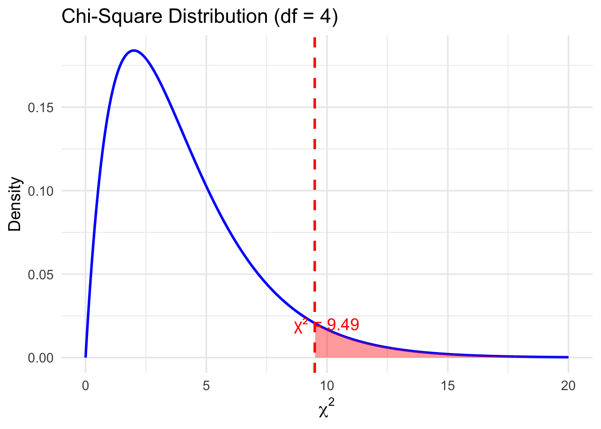
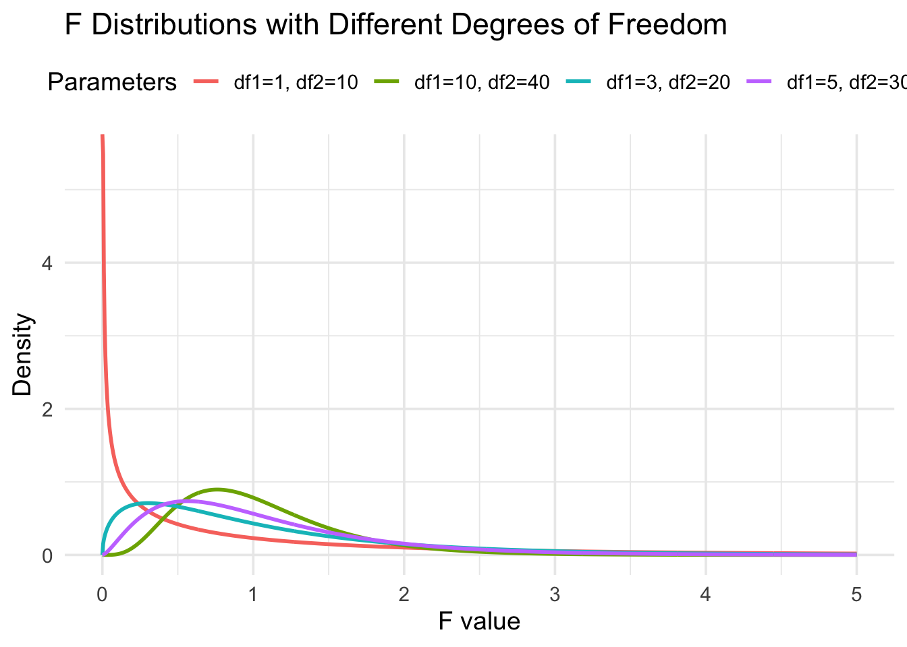
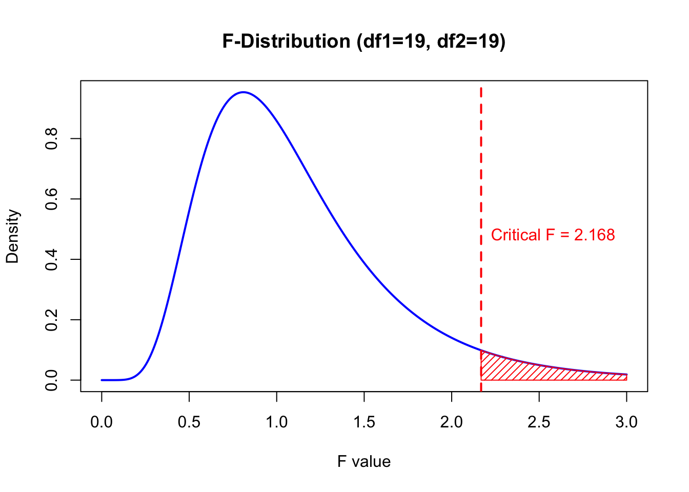
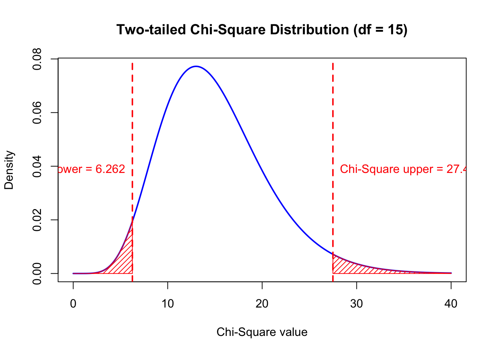
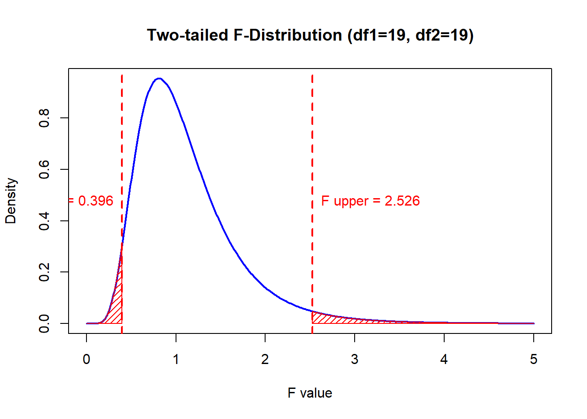
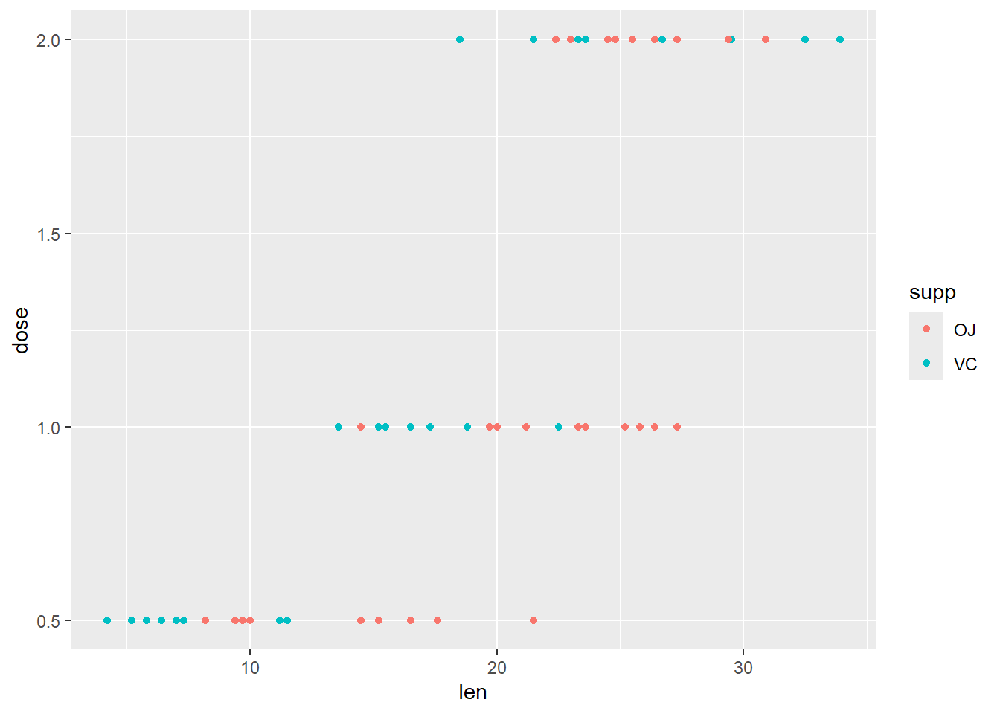
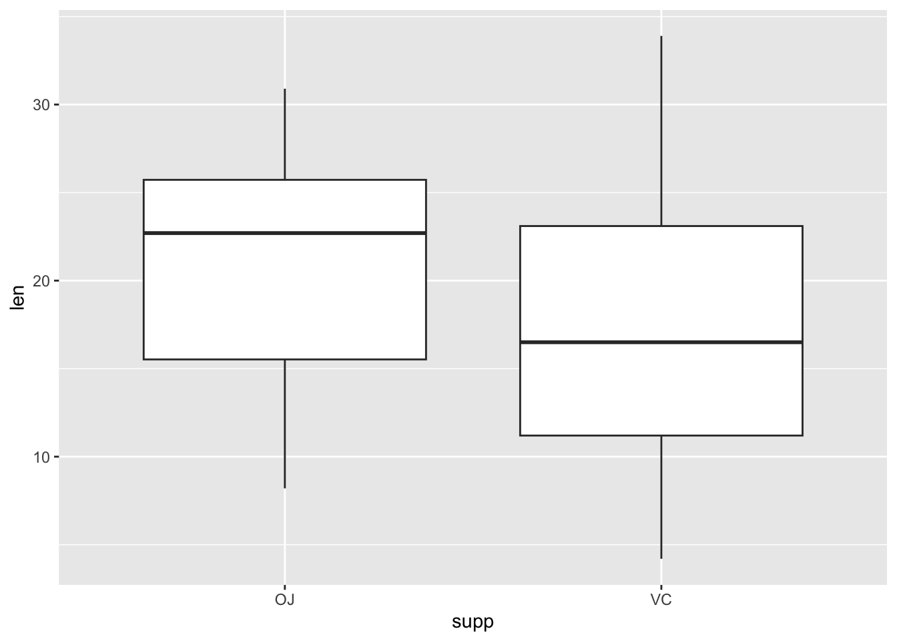

Week 7: Statistical Inference on Variance(s)
References
- Probability & Statistics for Engineers & Scientists, 9th Edition, Ronald E. Walpole, Raymond H. Myers, Sharon L. Myers, Keying Ye, Prentice Hall
Objectives:
Know the sampling distribution of the sample variance, and the ratio of two sample variances
Understand \(\chi^2\), and \(F\) distributions and know how to use
q-andp-function to find the critical value and probability of all these distributionsKnow how to use R to construct a confidence interval on Variance and Ratio of Variances
Know how to use
var.testto do the test for the ratio of variances and how to interpret the result
Probability Distributions
The Chi-squared distribution
Chi-squared distribution is usually used when we seek some conclusion on variance of a population.
If \(S^2\) is the variance of a random sample of size \(n\) taken from a normal population having the variance \(\sigma^2\), then the statistic \[ \chi^2 = \frac{(n-1)S^2}{\sigma^2} = \sum_{i=1}^n \frac{(X_i-\bar{X})^2}{\sigma^2}\] has a chi-squared distribution with \(v = n − 1\) degrees of freedom. The shape of chi-squared distribution is not symmetric.
The probability that a random sample produces a \(\chi^2\) value greater than some specified value is equal to the area under the curve to the right of this value. It is customary to let \(\chi^2_\alpha\) represent the \(\chi^2\) value above which we find an area of \(\alpha\). This is illustrated by the shaded region in the following figure, with \(v= 4,\alpha=0.05\).
Find Critical Value of Chi-squared distribution in R
Let \(\alpha = 0.05\) and \(n = 20\).
alpha <- 0.05
n <- 20
chiCriVal <- qchisq(1-alpha,n-1)
chiCriVal[1] 30.143531-pchisq(chiCriVal,df = n-1)[1] 0.05chiCriVal <- qchisq(alpha,n-1)
pchisq(chiCriVal,df = n-1)[1] 0.05The \(F\) Distribution
Suppose that we have a random sample of \(n_1\) observations from the normal population \(N(\mu_1,\sigma_1^2)\) and an independent random sample of \(n_2\) observations from a second normal population \(N(\mu_2,\sigma_2^2)\). Then, \[F_{n_1-1,n_2-1} = \frac{S_1^2/S_2^2}{\sigma_1^2/\sigma_2^2} = \frac{S_1^2/\sigma_1^2}{S_2^2/\sigma_2^2},\] follows an \(F\) distribution with \(v_1 = n_1-1\) and \(v_2 = n_2-1\), where \(S_1\), \(S_2\) and \(\sigma_1\), \(\sigma_2\) are sample and population standard deviations of sample 1 and sample 2, respectively. This \(F\) statistic can be used to compare variances from two independent groups.
Here are some density curves of \(F\) distribution with different degrees of freedom:

\[f_{1-\alpha,v_1,v_2}=\frac{1}{f_{\alpha,v_2,v_1}}.\]
The \(F-\)distribution finds enormous application in comparing sample variances. Applications of the \(F-\)distribution are found in problems involving two or more samples.
Find Critical Value of F distribution in R
Let \(\alpha = 0.05,n_1 = 20,n_2=20\).
alpha <- 0.05
n1 <- 20
n2 <- 20
fVal <- qf(1-alpha,n1-1,n2-1)
fVal[1] 2.168252#Check the probability
1-pf(fVal,df1 = n1-1,df2 = n2-1)[1] 0.05
Practice: The Chi-Squared and F Distribution
1. Which distribution is commonly used for inference about one population variance?
2. Which distribution is commonly used for inference about the ratio of two population variances?
3. We can use a confidence interval to make inference about the variance of a population.
4. The F distribution is symmetric.
Interval Estimate of the Variance
We already know \(S^2\) is an unbiased estimator of \(\sigma^2\). If a sample of size \(n\) is drawn from a normal population with variance \(\sigma^2\), an interval estimate of \(\sigma^2\) can be established by using the statistic \[\chi^2 = \frac{(n-1)S^2}{\sigma^2} \sim \chi^2_{n-1}.\]

Confidence Interval for \(\sigma^2\)
If \(s^2\) is the variance of a random sample of size \(n\) from a , a \(100(1-\alpha)\%\) confidence interval for \(\sigma^2\) is given by \[\frac{(n-1)S^2}{\chi^2_{\alpha/2,n-1}} < \sigma^2 < \frac{(n-1)S^2}{\chi^2_{1-\alpha/2,n-1}},\] where \(\chi^2_{1-\alpha/2,n-1}\) and \(\chi^2_{\alpha/2,n-1}\) are values of the chi-squared distribution with \(n-1\) degrees of freedom, leaving areas of \(1-\alpha/2\) and \(\alpha/2\), respectively, to the right.
Example 1
The following are the weights, in decagrams, of 10 packages of grass seed distributed by a certain company: 46.4, 46.1, 45.8, 47.0, 46.1, 45.9, 45.8, 46.9, 45.2, and 46.0. Find a 95% confidence interval for the variance of the weights of all such packages of grass seed distributed by this company, assuming a normal population.
Sample Variance
First, we need to find \(s^2\).
weight <-c(46.4,46.1, 45.8, 47.0, 46.1, 45.9, 45.8, 46.9, 45.2,46.0)
n<- length(weight)
ssquare <- var(weight)
ssquare[1] 0.2862222Critical Value
Here \(\alpha = 0.05\) since we are constructing a 95% confidence interval. The sample size is 10. Thus \(df = 10-1=9\). We need two critical values \(\chi^2_{\alpha/2,n-1}\) and \(\chi^2_{1-\alpha/2,n-1}\)
alpha <- 0.05 # 95% confidence interval
# chi-squared alpha/2
chiVal1 <- qchisq(1-alpha/2,n-1)
chiVal1[1] 19.02277# chi-squared 1-alpha/2
chiVal2 <- qchisq(alpha/2,n-1)
chiVal2[1] 2.700389Construct the Confidence Interval
loBd <- (n-1)*ssquare/chiVal1
loBd[1] 0.1354167upBd <- (n-1)*ssquare/chiVal2
upBd[1] 0.9539365Practice: CI for One Population Variance
Construct a 90% confidence interval for the variance ofSepal.Length of all records in the iris data set, assuming a normal distribution.
1) Which distribution should we use to construct a 90% CI here?
2) What is the value of \(\alpha\)?
3) Suppose there are 150 observations. To construct the CI, which critical values do we need?
4) Suppose the sample variance is 0.69. Which of the following is the 90% confidence interval?
Estimating the Ratio of Two Variances
A point estimate of the ratio of two population variances \(\sigma^2_1/\sigma_2^2\) is given by the ratio \(s_1^2/s_2^2\) of the sample variances. Hence, the statistic \(S_1^2/S_2^2\) is called an estimator of \(\sigma^2_1/\sigma_2^2\). If \(\sigma^2_1\) and \(\sigma_2^2\) are the variances of normal populations, we can use the statistic \[ F = \frac{\sigma_2^2S_1^2}{\sigma_1^2S_2^2} \sim F_{n_1-1,n_2-1}\] to establish an interval estimate of \(\sigma_1^2/\sigma_2^2\).

Confidence Interval for \(\sigma_1^2/\sigma_2^2\)
If \(s_1^2\) and \(s_2^2\) are the variances of a random sample of size \(n_1\) and \(n_2\), respectively, from normal populations, then a \(100(1-\alpha)\%\) confidence interval for \(\sigma_1^2/\sigma_2^2\) is given by
\[\frac{s_1^2}{s_2^2} \frac{1}{f_{\alpha/2,n_1-1,n_2-1}} < \frac{\sigma_1^2}{\sigma_2^2} < \frac{s_1^2}{s_2^2}f_{\alpha/2,n_2-1,n_1-1}, \] where \(f_{\alpha/2,n_1-1,n_2-1}\) is an \(f\)-value with \(n_1-1\) and \(n_2-1\) degrees of freedom, leaving an area of \(\alpha/2\) to the right, and \(f_{\alpha/2,n_2-1,n_1-1}\) is an \(f\)-value with \(n_2-1\) and \(n_1-1\) degrees of freedom.
Example 2 Orthophosphorus was measured, in milligrams per liter, at two stations on the James River. Fifteen samples were collected from station 1, and 12 samples were collected from station 2. The 15 samples from station 1 had an average orthophosphorus content of 3.84 milligrams per liter and a standard deviation of 3.07 milligrams per liter, while the 12 samples from station 2 had an average orthophosphorus content of 1.49 milligrams per liter and a standard deviation of 0.80 milligram per liter.
We would like to determine whether it is reasonable to assume that the population variances at the two stations are unequal. Justify this assumption by constructing 98% confidence intervals for \(\sigma_1^2/\sigma_2^2\) and for \(\sigma_1/\sigma_2\) where \(\sigma_1^2\) and \(\sigma_2^2\) are the population variances of orthophosphorus content at stations 1 and 2, respectively. Assume that the orthophosphorus contents at both stations are normally distributed.
Sample Variances
\(s_1 = 3.07\) and \(s_2=0.80\) are given
Critical Values
Here \(\alpha = 0.02\) as it is 98% confidence interval. Sample sizes are \(n_1=15\) and \(n_2=12\), we need to two critical values \(f_{\alpha/2,n_1-1,n_2-1}\) and \(f_{1-\alpha/2,n_1-1,n_2-1} = 1/f_{\alpha/2,n_2-1,n_1-1}\)
Construct CI
n1 <- 15
n2 <- 12
s1 <- 3.07
s2 <- 0.80
alpha <- 0.02
loBd <- s1^2/s2^2/qf(1-alpha/2, n1-1, n2-1)
loBd[1] 3.430136upBd <- s1^2/s2^2*qf(1-alpha/2, n2-1, n1-1)
upBd[1] 56.90341Taking square roots of the confidence limits, we find that a 98% confidence interval for \(\sigma_1/\sigma_2\) is \[1.851 < \frac{\sigma_1}{\sigma_2} < 7.549. \] Since this interval does not allow for the possibility of \(\sigma_1/\sigma_2\) being equal to 1, we were correct in assuming that \(\sigma_1 \ne \sigma_2\) or \(\sigma_1^2 \ne \sigma^2_2\).
Practice: CI for the Ratio of Variances
Construct a 96% confidence interval for the ratio of variances of Sepal.Length between virginica and setosa in the iris data set, i.e., \(\sigma^2_{virginica}/\sigma^2_{setosa}\). Assume that Sepal.Length is approximately normally distributed for both species.
1) Which distribution should we use to construct a 96% CI here?
2) What is the value of \(\alpha\)?
3) Suppose there are 50 observations for each species. To construct the CI, which critical value do we need?
4) Suppose the ratio of sample variances is 0.69. Which of the following is the 96% confidence interval?
Inference on Variances
In this section, we are concerned with testing hypotheses concerning comparison of population variances or standard deviations. Attention is focused on comparative experiments between methods or processes, where inherent reproducibility or variability must formally be compared. In addition, to determine if the equal variance assumption is violated, a test comparing two variances is often applied prior to conducting a t-test on two means.
Example 3 Comparison of Two Variances
Let’s continue with the weights of the no-nitrogen and nitrogen samples.
No Nitrogen: 0.32 0.53 0.28 0.37 0.47 0.43 0.36 0.42 0.38 0.43 Nitrogen: 0.26 0.43 0.47 0.49 0.52 0.75 0.79 0.86 0.62 0.46 Do these two samples have the same variance? Consider \(\alpha = 0.05\).
Parameter:
\(\sigma^2_{NON} =\) variances of the weight without nitrogen
\(\sigma^2_{NIT} =\) variances of the weight with nitrogen
Hypotheses:
A hypothesis test for two independent population variances can be used to determine whether or not the data provide statistical evidence of a difference in the variance of the weight between no nitrogen and nitrogen.
\[\begin{align*} H_0: & \sigma^2_{NON} = \sigma^2_{NIT} \qquad \text{or} \qquad \sigma^2_{NON}/\sigma^2_{NIT} = 1, \\ H_1: & \sigma^2_{NON} \ne \sigma^2_{NIT} \qquad \text{or} \qquad \sigma^2_{NON}/\sigma^2_{NIT} \ne 1 \end{align*}\]
Observed data: \[n_{NON} = 10, s_{NON} = 0.07279 \qquad n_{NIT} = 10, s_{NIT} = 0.18674\]
Assumptions:
We assume that both populations are normally distributed.
Test statistic:
Here we use the \(F\) statistic to test whether \(\sigma^2_{NON} = \sigma_{NIT}^2\). The test statistics is \[f =\frac{s_{NON}^2}{s_{NIT}^2} = \frac{(0.07279)^2}{(0.18674)^2} =0.15195\]
p value
The \(F\) distribution is not symmetric. We calculate the p-value as follows.
noNitro<- c(0.32,0.53 ,0.28, 0.37, 0.47, 0.43, 0.36, 0.42,0.38,0.43)
s1 <- sd(noNitro)
Nitro<- c(0.26,0.43,0.47,0.49,0.52,0.75,0.79,0.86, 0.62,0.46)
s2<- sd(Nitro)
2*pf(s1^2/s2^2,9,9)[1] 0.009786692The p-value is 0.009786692 < \(\alpha\), so we should reject \(H_0\).
We can also make a conclusion based on critical regions, if we are given significance level \(\alpha\).
Critical regions:
We have \(\alpha = 0.05\). For the two-sided alternative \(\sigma_{NON}^2 \ne \sigma_{NIT} ^2\) the critical region is \(f < f_{1-\alpha/2,n_{NON}-1,n_{NIT}-1} =0.24839\) or \(f> f_{\alpha/2,n_{NON}-1,n_{NIT}-1} = 4.025994.\)
Since the observed \(F\)-statistic is less than \(f_{0.975,9,9}\), we reject \(H_0\).
F-test in R:
In R, we use var.test to do the F test.
var.test(noNitro,Nitro,alternative = "two.sided",conf.level = 0.95)
F test to compare two variances
data: noNitro and Nitro
F = 0.15195, num df = 9, denom df = 9, p-value = 0.009787
alternative hypothesis: true ratio of variances is not equal to 1
95 percent confidence interval:
0.03774262 0.61175613
sample estimates:
ratio of variances
0.1519516 We get the same result.
In Python, there is no direct equivalent of R’s var.test(). However, we can use stats.f.ppf to find critical values or stats.f.cdf to calculate the p-value.
Based on the results, we can see F value is in the critical region and the p value is much less than significance level \(\alpha\). Therefore, we reject \(H_0\).
Note:
- \(F\) test is very sensitive to the distributions of the populations.
- The critical regions of size \(\alpha\) corresponding to the one-sided alternatives \(\sigma_1^2 < \sigma_2^2\) and \(\sigma_1^2 > \sigma_2^2\) are, respectively, \(f < f_{1-\alpha,v_1,v_2}\) and \(f> f_{\alpha,v_1,v_2}\)
Practice: Inference for Two Variances
Suppose we want to test whether two population variances are equal. Assume that both populations are normally distributed.
1. Which distribution should we use for the hypothesis test?
2. Which hypotheses are appropriate for testing whether the two population variances are equal?
3. If the p-value is 0.03245, what should we conclude?
4. Suppose \(\alpha=0.01\). Let \(f\) denote the F-statistic. What is the critical region for a two-sided test?
Practice in R: Let \(\alpha = 0.01\).
sample1 <- c(19.8,12.7,13.2,16.9,10.6,18.8,11.1 ,14.3,17.0,12.5)
sample2 <- c(24.9,22.8,23.6,22.1,20.4,21.6,21.8 ,22.5)
var.test(sample1,sample2,alternative = "two.sided",conf.level = 0.99)
F test to compare two variances
data: sample1 and sample2
F = 5.6574, num df = 9, denom df = 7, p-value = 0.03245
alternative hypothesis: true ratio of variances is not equal to 1
99 percent confidence interval:
0.6645001 38.9509280
sample estimates:
ratio of variances
5.657436 When we let \(\alpha = 0.01\), we should not reject the null hypothesis. However, if \(\alpha = 0.05\), we should reject the null hypothesis.
One Comprehensive Example
Let’s play with a data set ToothGrowth. We want to investigate whether the mean of len is the same for the two levels of supp. We assume that len follows an approximately normal distribution within each group. However, we do not know whether the two groups have equal variances. Let’s see what we can do.
head(ToothGrowth) len supp dose
1 4.2 VC 0.5
2 11.5 VC 0.5
3 7.3 VC 0.5
4 5.8 VC 0.5
5 6.4 VC 0.5
6 10.0 VC 0.5summary(ToothGrowth) len supp dose
Min. : 4.20 OJ:30 Min. :0.500
1st Qu.:13.07 VC:30 1st Qu.:0.500
Median :19.25 Median :1.000
Mean :18.81 Mean :1.167
3rd Qu.:25.27 3rd Qu.:2.000
Max. :33.90 Max. :2.000 Before conducting hypothesis testing, let’s do a visualization for the data.
ggplot(data = ToothGrowth) + geom_point(mapping = aes(x = len, y = dose, colour = supp))
Based on the plot, len appears to increase as dose increases. We cannot see a clear relationship between len and supp, so let’s try a boxplot.
ggplot(data = ToothGrowth) + geom_boxplot(mapping = aes(x = supp, y = len))
Based on the boxplot, we may conjecture that the means and variances of len differ between the two groups. Let’s do an \(F\)-test first. Consider \(\alpha = 0.05\).
\[\begin{align*} H_0: \sigma_{OJ}^2 = \sigma_{VC}^2, \\ H_1: \sigma_{OJ}^2 \ne \sigma_{VC}^2 \end{align*}\]
var.test(len ~ supp, data = ToothGrowth)
F test to compare two variances
data: len by supp
F = 0.6386, num df = 29, denom df = 29, p-value = 0.2331
alternative hypothesis: true ratio of variances is not equal to 1
95 percent confidence interval:
0.3039488 1.3416857
sample estimates:
ratio of variances
0.6385951 In-Class Exercise: T-test based on the result of F-test
Will you reject \(H_0\) or not? Why?
Based on the result of F test, do a hypothesis testing for the mean of
lenbetween twosupp. What is your conclusion?
In-Class Exercise: Hypothesis Test for two means
We want to investigate the sepal lengths of two species of Iris, setosa and virginica. We conjecture that the mean sepal length of virginica is greater than that of setosa. Conduct a hypothesis test at a significance level of \(\alpha=0.05\). Determine whether the data provide sufficient evidence to support this conjecture.
Conclusions:
\(\chi^2\) distribution is used for sample variance; \(F\) distribution is used for the ratio of two variances.
To estimate \(\sigma^2\) for normal distributions, we need \(\chi^2\) distribution; To estimate \(\sigma_1^2/\sigma^2_2\), we need \(F\)-distribution.
We can use
var.test()to test whether two population variances are equal. Based on the result of the F-test, we can assess whether the equal-variance assumption is reasonable and choose the appropriate setting forvar.equalint.test().